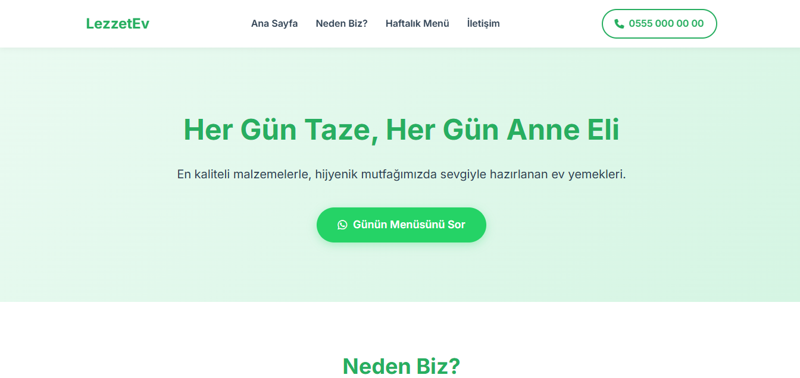
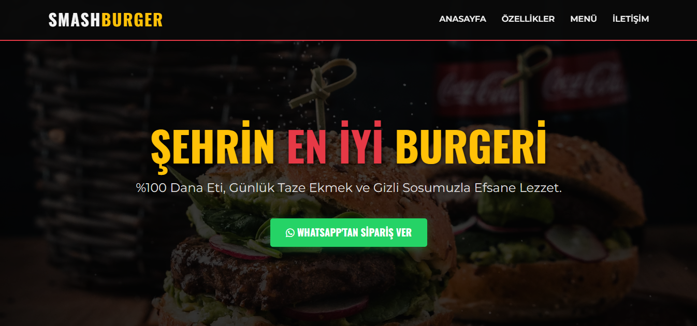
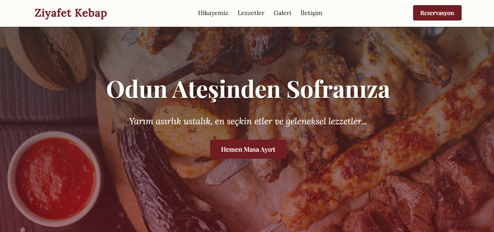

Merhaba, ben Yağız Yıldırım. Fikirleri şık tasarımlara, tasarımları ise kusursuz kodlara dönüştürüyorum. Dijital dünyadaki vitrininizi oluşturmaya hazır mısınız?

Geleneksel lezzetleri modern bir arayüzle dijital dünyaya taşıdım. Kullanıcıların hızlıca sipariş verebileceği, tüm ekran boyutlarına tam uyumlu ve optimize edilmiş performans odaklı bir kurumsal web tasarımı.

Görsel ağırlıklı ve iştah açıcı bir sunum üzerine kurgulanan bu arayüzde, yüksek etkileşimli bir kullanıcı deneyimi (UX) tasarladım. Karanlık tema estetiğini, hızlı yükleme ve mobil öncelikli prensiplerle birleştirdim.

Ürün odaklı, temiz ve sade bir e-ticaret vitrini. Müşteri dönüşümünü (satış) artırmak için hazırladığım bu projede, şık tipografi ve kullanıcı dostu navigasyon yapısını JavaScript ile dinamik hale getirdim.
Selam, ben Yağız! Dijital dünyada sadece kod yazmıyor, aynı zamanda kullanıcıların aklında yer edecek estetik deneyimler tasarlıyorum.
Tasarımdaki detaylara olan takıntımı, yazılımın gücüyle birleştirerek "iyi" değil, "kusursuz" web siteleri üretmeyi hedefliyorum. Standart şablonların dışına çıkıp, her projeye kendi ruhunu katmayı seviyorum.